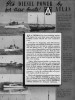

Atlas-Imperial Manuals
 |
Instruction Book No 27-12Instruction Book No 27-12 for Installing and Operating Atlas-Imperial Four Cycle Mechanical Injection Diesel Engines. 70 pages. printable version (9 MB) |
 |
Instruction Book No 32A-2Instruction book No 32A-2 for installing and operating Atlas-imperial four cycle mechanical injection diesel engines. 65 pages. printable version (22 MB) |
 |
Operator's Instructions for 8" x 10-1/2" enginesOperator's Instruction Book for engines with 8" bore, 10-1/2" stroke, 4-5-6-8 cylinders, such as 4HM528s. 59 pages. printable version (12 MB) |
 |
Operator's Manual for Engine Model 6HM464Operators Manual TC 1386 Atlas Imperial Marine Diesel Engine Model 6HM464 - 120 Horsepower 6-cylinder 7-1/2x10-1/2 Direct Reversible. 194 pages. printable version (201 MB) |
 |
Technical Manual for Army Harbor Tugs, 600 HPTM 55-1925-202-20P Department of the Army Technical Manual: Organizational Maintenance Repair Parts And Special Tool List. Tug, Harbor, Diesel, 600 HP, Steel, 65 Ft, Design 3004, Hull Numbers ST1978 through ST1986, ST1989 through ST1993, and ST2007. Model 45M5X8 Atlas-Imperial diesel engine. 281 pages. printable version (201 MB) |
 |
Parts Catalog for Atlas-Imperial 4HM-282Parts Catalog for Atlas-Imperial 20312. 6-1/2 bore , 8-1/2 stroke, 4-cyl marine model 4HM-282. 163 pages. printable version (28 MB) |
 |
Parts Catalog for Atlas-Imperial 45-M5X-8Parts Catalog for Atlas-Imperial 9" bore, 10-1/2" stroke, 8 cyl marine model 45-M5X-8. 276 pages. printable version (41 MB) |
 |
Parts Catalog for Atlas-Imperial 6HM763Parts Catalog for Atlas-Imperial 12966. 9" bore , 12" stroke, 6-cyl marine model 6HM763. 149 pages. printable version (150 MB) |
 |
Parts Catalog for Atlas-Imperial 6HM3358Parts Catalog for Atlas-Imperial 6HM3358. 15" bore , 19" stroke, 6-cyl marine model. 186 pages. printable version (41 MB) |
 |
Parts Catalog for Atlas-Imperial 4HM763Parts Catalog for Atlas-Imperial 12719. 9" bore , 12" stroke, 6-cyl marine model 4HM763. 152 pages. printable version (204 MB) |
 |
Parts Catalog for Atlas-Imperial EN668Parts Catalog for Atlas-Imperial USMC hulls 595 to 598, 607 to 612, and 624 to 628. 6" bore , 9" stroke, 6-cyl stationary model EN-668. 159 pages. printable version (140 MB) |
General Operating Manual
This manual was produced by Atlas-Imperial as a general guide to its diesel engine line.
PDF files:
|
Magazine Advertisement
This advertisement was circulated promoting Atlas-Imperial "Heavy Duty Diesels" as reliable, efficient power for workboats and pleasureboats alike.
|  |